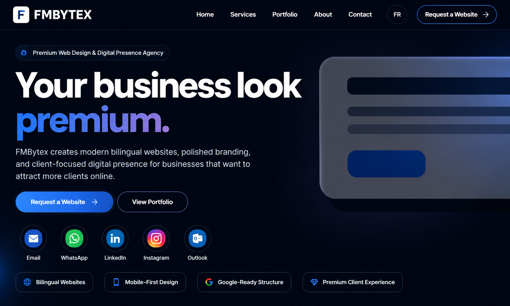
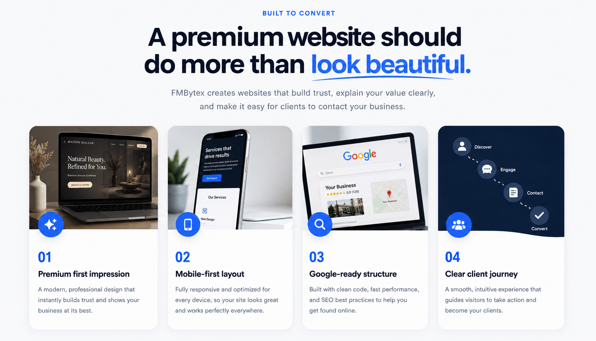
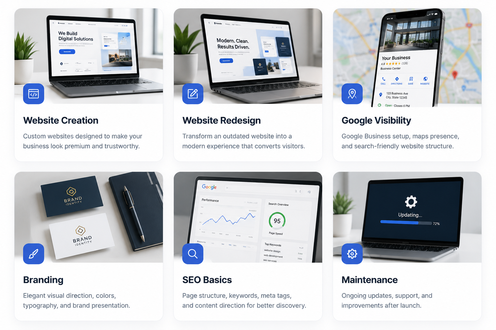
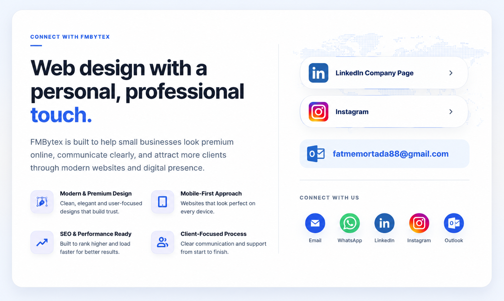

Sites web et expériences numériques pour entreprises modernes.
Sites web bilingues haut de gamme, branding et présence numérique pour les entreprises au Canada.
Votre site web doit inspirer confiance dès le premier clic.
Nous créons des sites web haut de gamme, fluides sur mobile et conçus pour encourager les visiteurs à passer à l’action.
Des systèmes numériques avec une approche personnelle et professionnelle.
FM Systems aide les entreprises modernes à projeter une image haut de gamme en ligne, à communiquer clairement et à attirer plus de clients grâce à des sites web et une présence numérique raffinés.
Tout ce dont votre entreprise a besoin pour paraître professionnelle en ligne.
De la première impression à la visibilité sur Google, FM Systems bâtit la fondation numérique que votre entreprise mérite.

Systèmes web
Des sites web personnalisés conçus pour donner à votre entreprise une image haut de gamme et crédible.

Refonte numérique
Transformez un site dépassé en une expérience moderne qui convertit les visiteurs.

Visibilité Google
Configuration Google Business, présence sur Maps et structure de site pensée pour la recherche.

Branding
Direction visuelle élégante, couleurs, typographie et présentation de marque.

SEO de base
Structure des pages, mots-clés, balises méta et orientation du contenu pour améliorer la visibilité.
Maintenance
Mises à jour, soutien et améliorations continues après le lancement.
Des projets numériques réels avec différents objectifs d’affaires.
FM Systems peut accompagner autant les plateformes de services professionnels que les sites web locaux haut de gamme.

Mortacc
Un concept de plateforme professionnelle pour les cabinets comptables canadiens, axé sur l’accueil client, la collecte de documents, les services corporatifs et la gestion de pratique.
Voir le site
Maison Malaak
Un site raffiné pour un institut de beauté et de formation, axé sur le luxe féminin, les services, la réservation, la formation et une expérience client soignée.
Voir le siteDes expériences numériques avec une impression haut de gamme.
Projets et concepts sélectionnés montrant le style de travail créé par FM Systems.
Maison Malak
Présence numérique élégante pour une entreprise de beauté et bien-être.
Mortacc
Direction de marque professionnelle pour les services d’affaires et de conformité.

Présence numérique
Systèmes numériques, branding et visibilité en ligne conçus pour attirer des clients.
Conçu pour les entreprises qui veulent paraître établies.
Les petites entreprises ont besoin de plus qu’un site web. Elles ont besoin d’une première impression forte, d’un message clair et d’une présence numérique qui inspire confiance.
Perfect for businesses in Montréal, Quebec, and across Canada.
Votre site sera professionnel sur téléphone, tablette et ordinateur.
Chaque section est conçue pour bâtir la confiance et encourager les visiteurs à vous contacter.
Un site haut de gamme doit faire plus qu’être beau.
FM Systems crée des sites web qui bâtissent la confiance, expliquent clairement votre valeur et facilitent le contact avec votre entreprise.
Pensé pour les entreprises qui prennent leur image au sérieux.
FM Systems aide les entreprises modernes à créer une présence en ligne soignée, stratégique et centrée sur le client.
“The website finally matches the luxury experience clients receive in person.”
Beauté & Wellness Business“A polished digital presence makes the business look established and trustworthy from the first click.”
Professional Services Platform“Clear messaging, bilingual structure, and stronger visuals help visitors understand the offer quickly.”
Présence numérique StratégieDes projets présentés comme des transformations premium.
Chaque projet est présenté avec son objectif, sa direction visuelle et l’expérience client créée.
Prête à élever votre présence en ligne?
Créons un site web dont vos clients se souviendront.